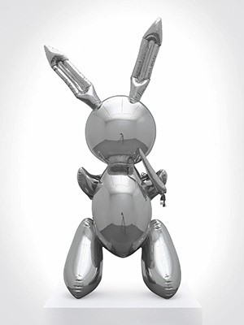

Jeff Koons ‘Rabbit’ Sets Auction Record
for Most Expensive Work by Living Artist
By Scott Reyburn
May 15, 2019 A shiny stainless steel sculpture created by Jeff Koons in 1986, inspired by a child’s inflatable toy, sold at Christie’s on Wednesday night for $91.1 million with fees, breaking the record at auction for a work by a living artist, set just last November by David Hockney. Robert E. Mnuchin, an art dealer and the father of Treasury Secretary Steven Mnuchin, made the winning bid for Mr. Koons’s 1986 “Rabbit” from an aisle seat near the front of the salesroom. He was seated near Peter Brant, the collector and private museum-owner, and Jeffrey Deitch, the dealer.| Banility | Puppy | Michael Jackson and Bubbles |
|---|---|---|
| Tulips | Balloon Dog | KiepenKerl |